The projects are presented in chronological order, reflecting improvements and changes in my individual design process over the course of the semester.
Select the "Family of Buttons" card to get started, then move through the remaining projects from left to right.

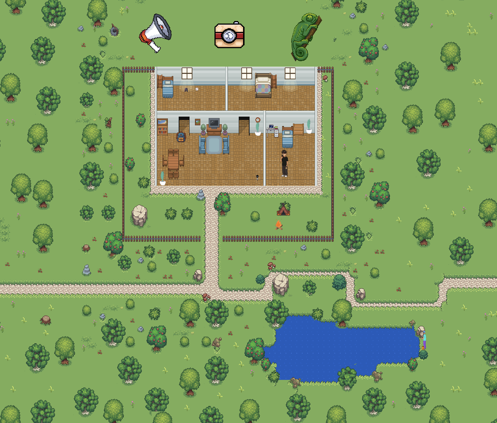
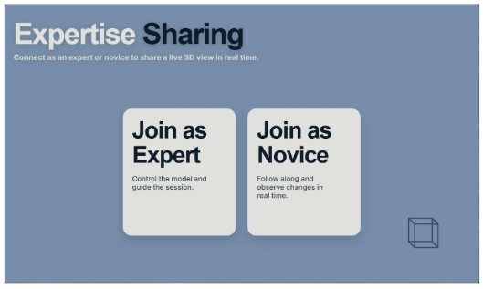
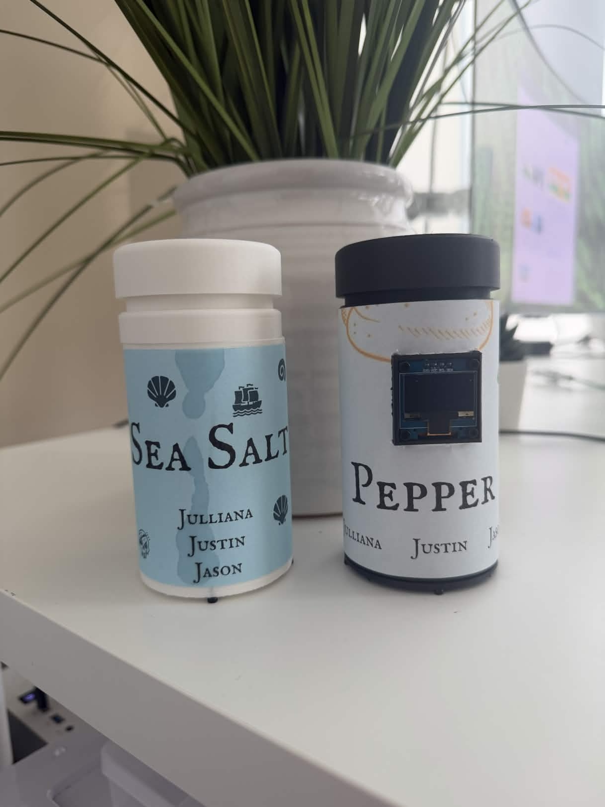
Project Overview
For our first project, we were tasked with creating a web application containing three buttons. Each button was designed to represent a team member’s personality or likeness in a unique way. Interacting with the buttons highlighted relationships between team members, showcasing similarities in our experiences, values, and personalities.
Click To View Live ProjectMy Role
For this project, my main role focused on generating design ideas and exploring different concepts through sketches and group discussions. I also took on a lead development role, creating a simple web framework that allowed my team members to easily integrate their own code, assets, and animations. In addition, I designed and created the background asset using Sprite Fusion (a tilemap editor), incorporating input from all group members.
Design Process & Philosphy
As this was our first project, both our design process and my personal design philosophy were relatively simple and novice. At this stage, my understanding of design was largely centered around the 10×10 ideation method, as that was all we had covered. I focused on generating a range of unique concepts through sketches during a brief divergence phase.
After developing initial ideas, we came together as a group to converge and selected a concept based on preference rather than using a structured evaluation. We then made small adjustments to the chosen design, refining elements slightly based on aesthetics rather than functionality or the underlying meanings associated with the project goal.
This reflects my early design approach that prioritized idea generation through simple sketches and selecting a workable concept that we thought was "good" enough, rather than systematically evaluating, justifying, or iterating on specific designs.
Evidence
Below is a collection of design artifact photos, and individual contribution evidence from the development process.
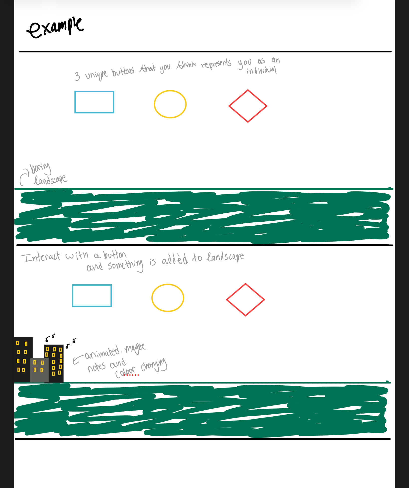
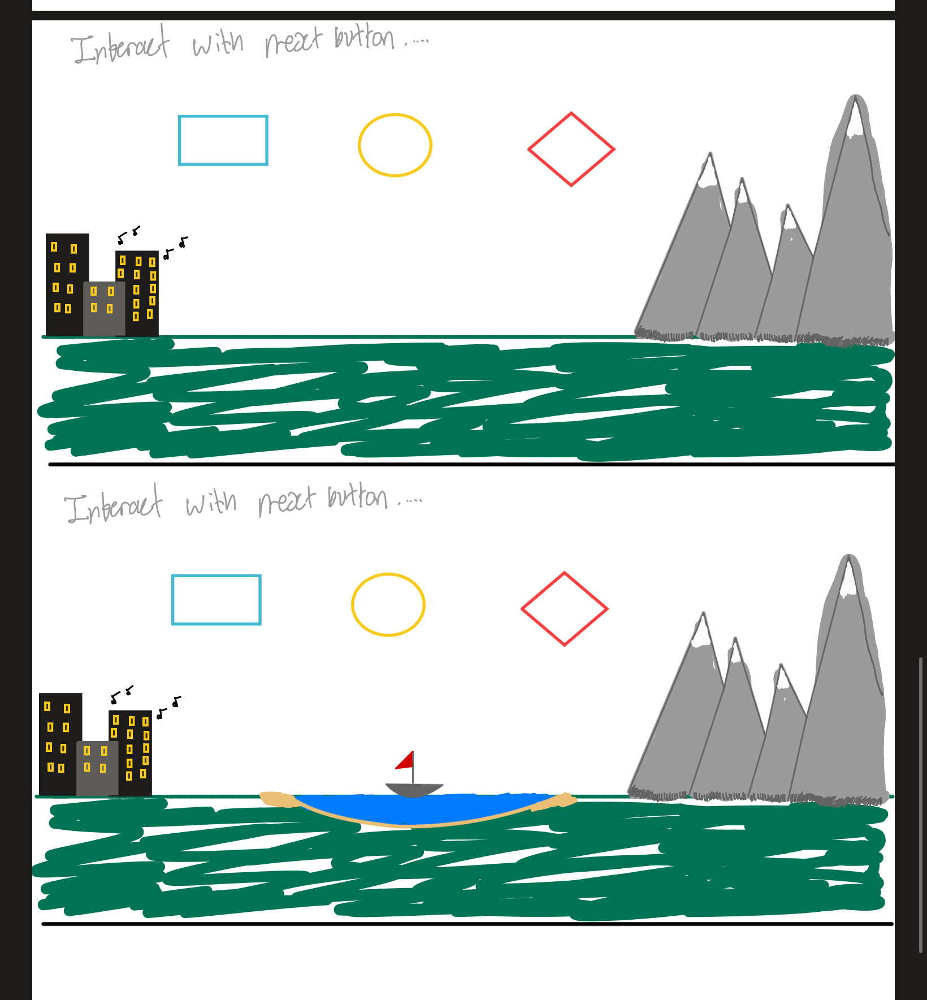
This reflects my initial design approach, where ideas were explored informally. Any refinement that did occur was based primarily on intuition, with little structure or justification guiding the process.
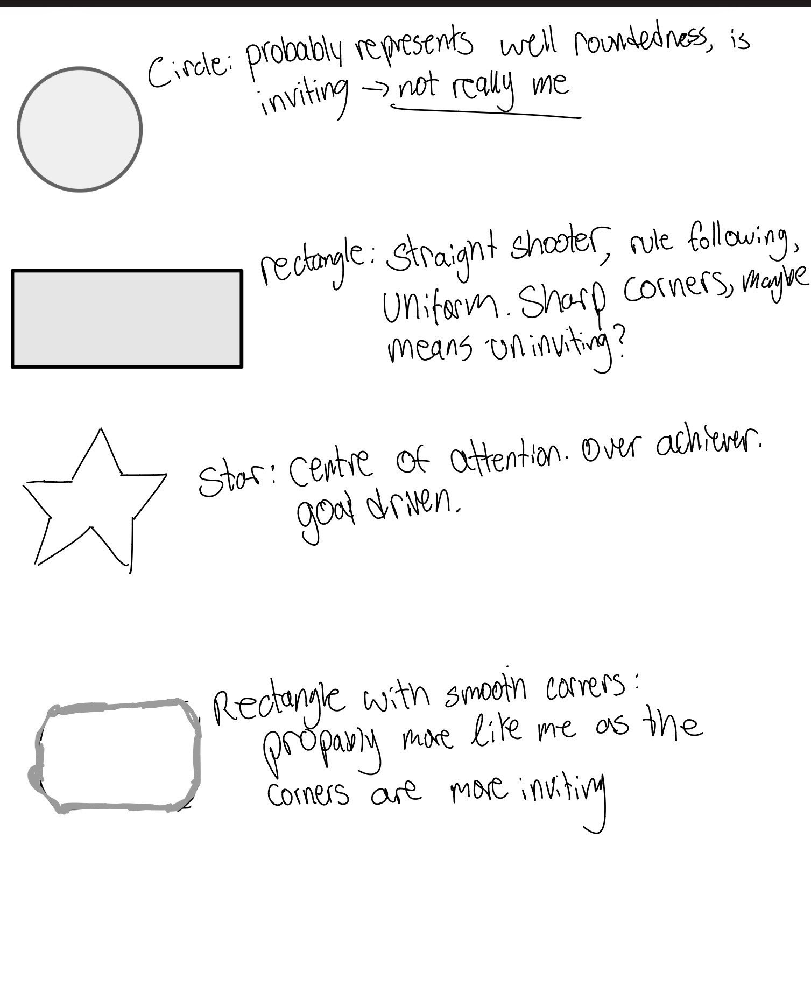
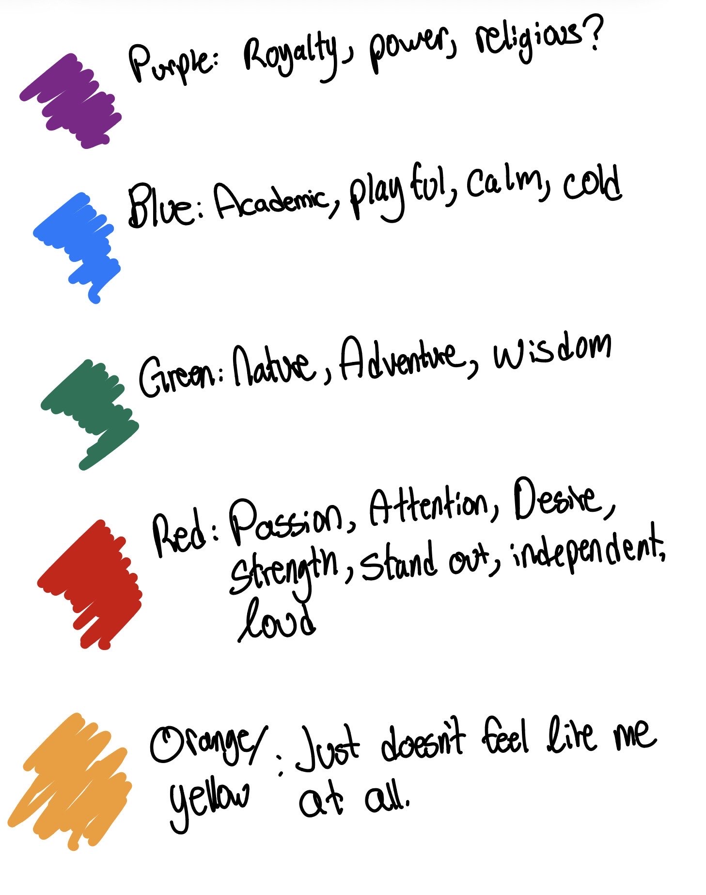
With my current understanding of design methods, I would have expanded on this exploration by iterating further and considering how these shapes and colours could have been incorporated into more concrete concepts, such as objects or interactions. This would have helped refine the idea and move it toward a more developed and meaningful design.
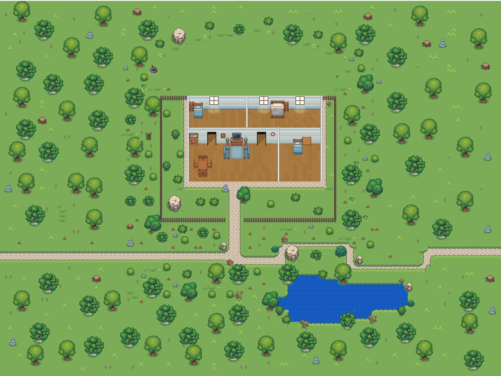
At the time, I focused on creating a scene that I felt capable of building and proceeded with that idea, rather than grounding the design in a clear purpose or evaluating alternative approaches that may have fit the criteria better.
Project Overview
For our second project, we were tasked with creating a system that helps experts in 3D CAD software synchronously and remotely share expertise with novice users. The system also needed to incorporate novel uses of embodied input and output to effectively convey and receive this expertise.
Click To View Live ProjectMy Role
For this project, I stepped back from a lead development role and focused on generating and refining design concepts. I contributed through sketch based ideation and developed a higher-fidelity concept using Fusion 360 and 3D printing. I also supported the team by assisting with implementation and documentation as needed.
Design Process & Philosophy
Building on feedback from our initial design critique, I began to question whether simply generating ideas was enough to arrive at an effective design. While the 10×10 method supported strong idea generation, it did not ensure that the selected concept was the "right design".
Once again, we began with a divergence phase, where each team member generated a range of concepts using the 10×10 method. During convergence, we initially fell into a similar pattern as in Project 1, selecting a concept based on preference rather than structured evaluation or comparison against defined criteria.
After developing an initial prototype and discussing it as a group, I recognized that we had repeated the same limitation from our previous approach. We had gotten tunnel visioned on identifying a workable concept rather than ensuring it was the most suitable one. As a result, we chose to diverge again, generating new ideas and reconsidering our options more carefully.
During this second convergence phase, we introduced a more structured approach by defining criteria and ranking concepts against one another. This marked a shift in my design philosophy, moving toward more intentional decision making and justifying design choices rather than relying solely on personal preference.
Although this was a step in the right direction, I recognized that my design approach was still limited, as I continued to neglect the use of other design process models that we had covered in class. While we introduced structured evaluation to identify what we believed to be the “right” design, we were still lacking individual design iteration and refinement. My use of the 10×10 method remained focused on generating ideas rather than iterating on and improving those ideas.
Evidence
Below is a collection of design artifact photos, and individual contribution evidence from the development process.
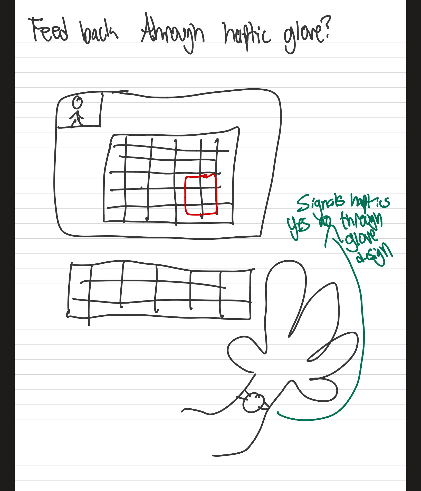
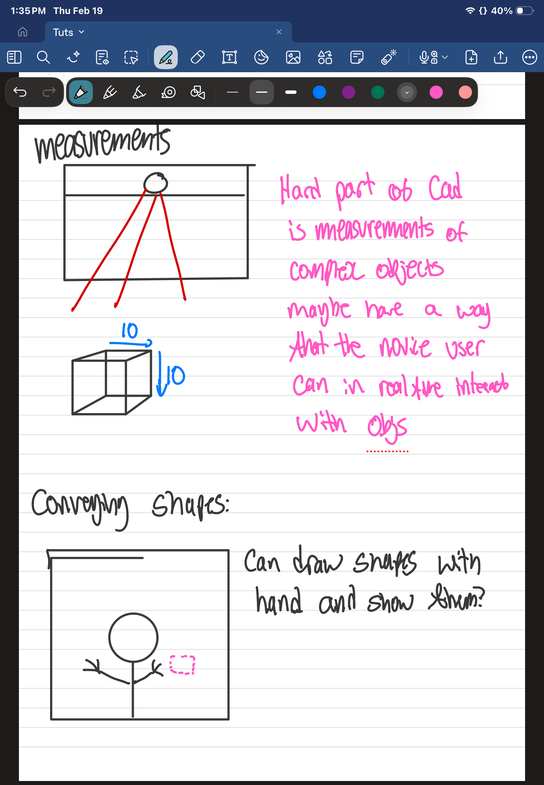
One of these concepts was selected for our initial prototype; however, the decision was made primarily based on preference rather than a justified evaluation process. This reflects a continued limitation in my design approach, where ideas were not critically compared or supported by any sort of defined design criteria.
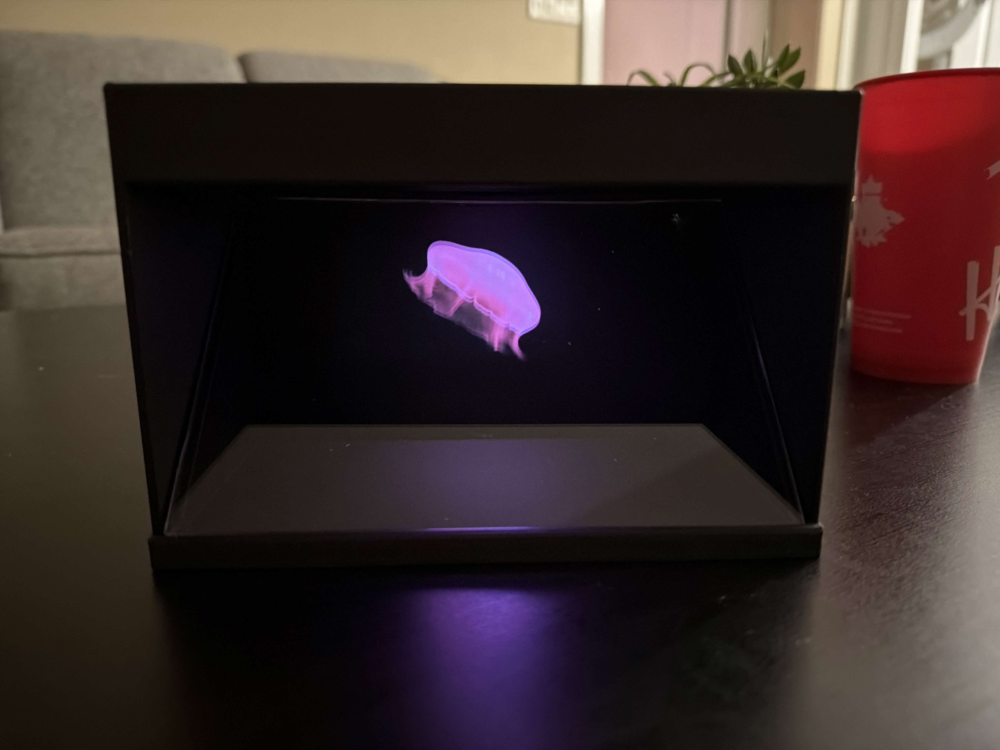
While this artifact helped make the concept more tangible and allowed us to evaluate aspects of the interaction, it also reflects further limitations. The concept had once again been selected prematurely, without structured evaluation or comparison against alternative ideas. As a result, this prototype was developed based on a decision that was tunnel visioned based on novelty alone and was not fully justified.
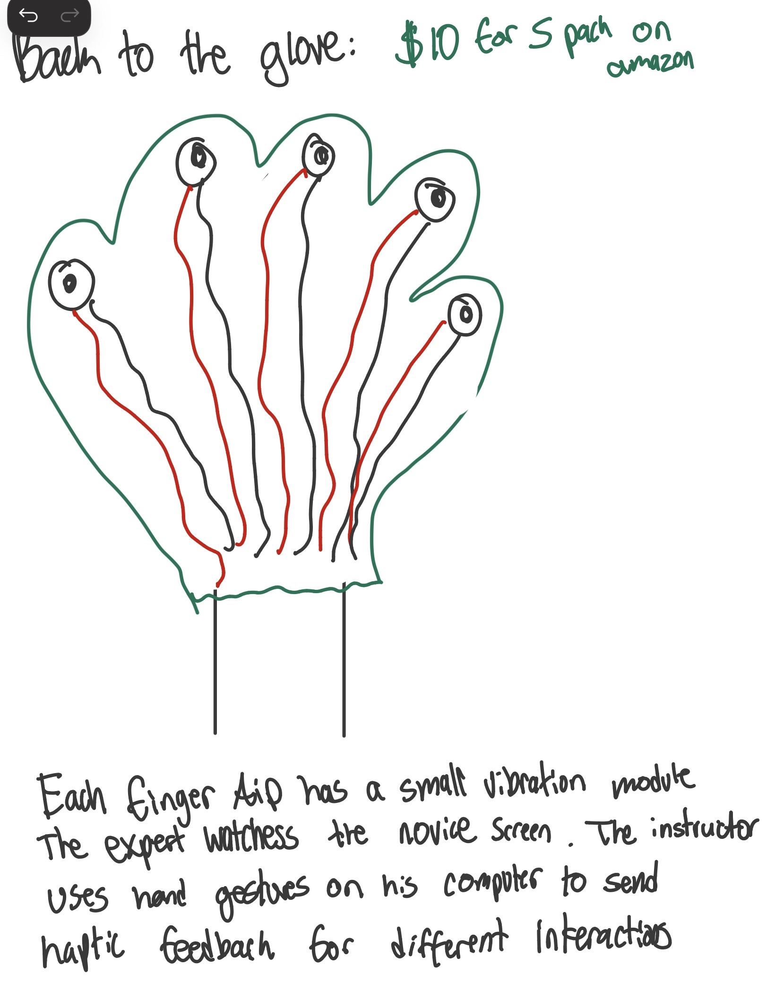
Although this concept was not ultimately selected, this step reflects an important change in my design process. Instead of moving forward with a single idea, I began to revisit and improve existing concepts, aligning more closely with iterative design models and allowing for more thoughtful exploration of the design space.
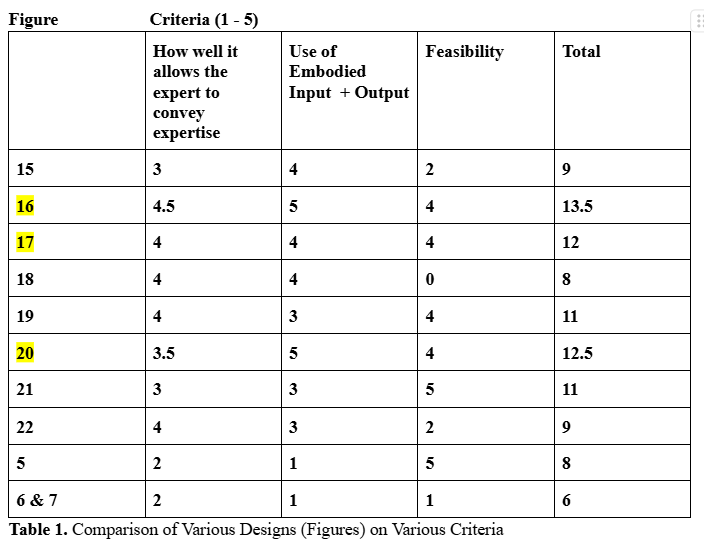
This once againe marked a significant shift in our design process, as it allowed us to justify our decisions and better understand the strengths and limitations of each idea. For me, this was a key moment in moving away from intuition based choices that were grounded in aesthetic appeal or how "cool" I thought the idea was, toward a more intentional and criteria driven approach to design.
Project Overview
For our final project, we were tasked with designing and implementing a system that augments one or more everyday objects to improve the experience of people eating together. The system was required to make creative use of physical computing, incorporating sensor-based inputs and electronic outputs.
Click To View Live DemoMy Role
For this project, I contributed to ideation, group discussions, and evaluation of concepts against our design criteria. However, due to the nature of physical computing and the challenges of remote collaboration, I took on a larger role in developing the final system, partially due to my passion of physical computing and microcontrollers in general.
Design Process & Philosophy
As this was our final project, I aimed to move beyond my previous reliance on the 10×10 ideation method and explore new approaches to design such as the "Double Diamond" as disscussed in class. Instead of generating all ideas at once, I adopted a more continuous ideation approach. Over several days, I kept an open document tab where I noted various problems and frustrations related to shared eating experiences that I could think of. I also gathered input from others, asking friends in passing about aspects of eating together that they found undesirable or things that they wish they could improve.
To expand this further, I then explored my own kitchen and dining space, and made note of some everyday objects that I thought could be augmented. This allowed me to ground my ideas a bit more and helped me to better understand the design opportunity before blindly moving into sketching.
During our initial convergence, this method proved relatively effective. Rather than selecting a single concept based on preference as we had done during the past, we were able to combine and build upon multiple of the group's ideas in realtime. We then did some structured evaluation early on by defining what we thought was good criteria and ranking our new concepts and other member's intial concepts against eachother to try and identify a strong and justfied starting point.
From there, our process was then focused on iterative development. Instead of selecting a final design immediately and building it out, we focused on exploring different functionalities and interaction possibilities for our chosen concept. We then generated multiple variations, sketched some of them out, and evaluated them against defined criteria once again to determine what we thought would be the best design.
During implementation, this iterative mindset continued. We explored various different input and output mechanisms through ideation that we felt could achieve similar goals and compared them once again using structured evaluation. This led to the development of an initial system artifact.
Although the initial system was functional and we were relatively happy with it, we were still excited about earlier design ideas and chose not to compromise on what we thought was a "good enough system". Thus, revisitng our previous design artifacts, we went through a similar structure as defined above to create an additional justfied system artifact that compliments and extends our intial system.
This project reflects a significant shift in my design philosophy compared to both projects 1 & 2. Rather than focusing primarily on idea generation and getting stuck in the 10x10 trap of selecting a single concept and running with it, I strongly emphasized exploring the problem space and iteratively refining mulitple different aspects of a given design. This approach aligns closely with the principles of the Double Diamond design model, allowing me to make more informed design decisions and develop a stronger final system with multiple elements that can be individually justified.
Evidence
Below is a collection of design artifact photos, and individual contribution evidence from the development process.
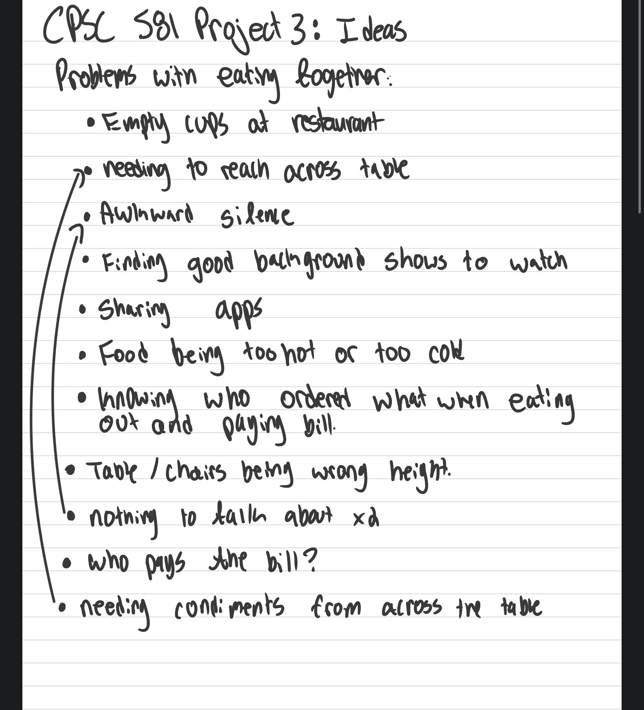
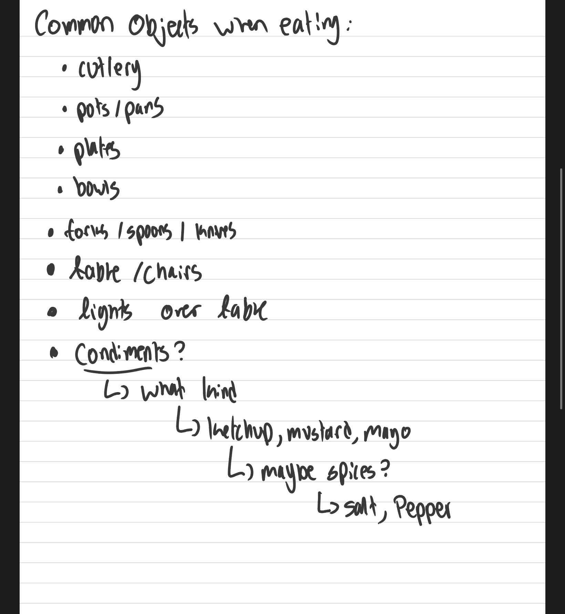
This allowed me to engage more deeply with the design space and begin grounding my ideas in real world experiences that myself and others could relate to. However, after some reflection, I also do recognize that my exploration was still limited in scope, as I primarily focused on identifying “problems” with eating together. In doing so, I overlooked broader opportunities suggested by the prompt's keyword "improve", such as designing for enjoyment, entertainment, or enhancing other, more positive aspects of shared eating experiences.
While this approach marked a clear improvement in how I generated ideas, it also highlighted that defining the problem space itself is an extremely critical part of the overall design process that cannot be overlooked.
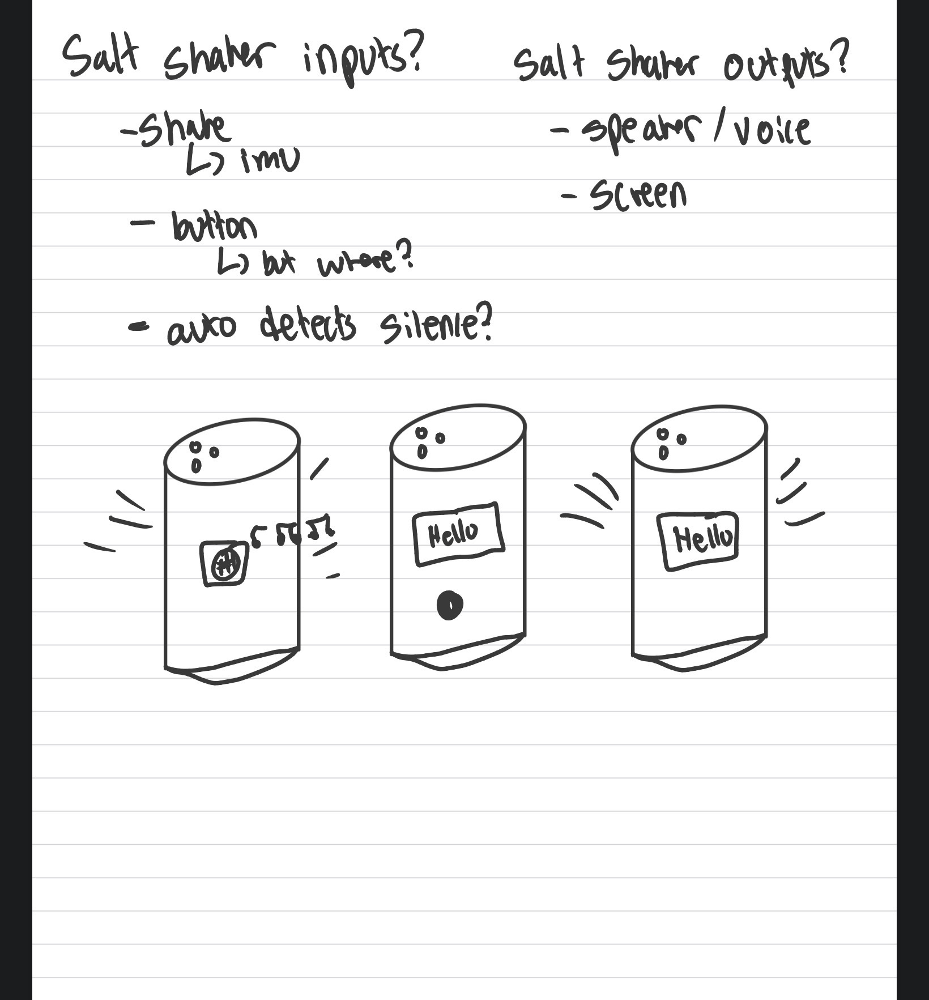
This again reflects a key improvement in my design process, where I shifted from continuously generating isolated ideas to developing and refining concepts in greater detail. By exploring the feasibility and interaction design of a single idea, I was able to move closer to a more concrete and implementable system that I could better evaluate against other designs.
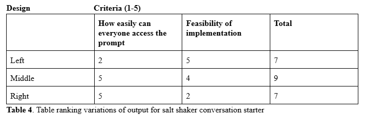
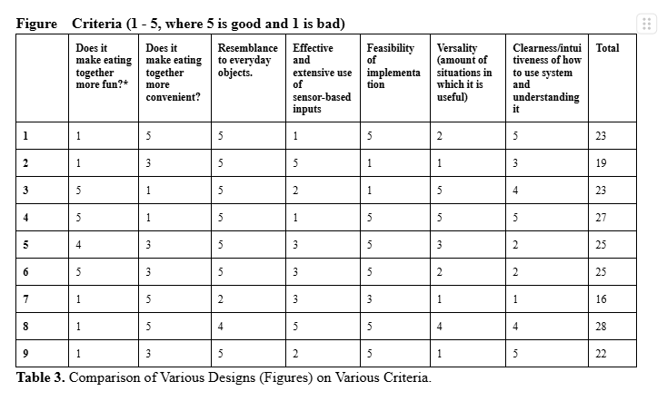
Although I think this once again was a huge step in the right direction, I still need to work on choosing the right criteria to ensure we are ranking the designs on relevant and meaningful areas.
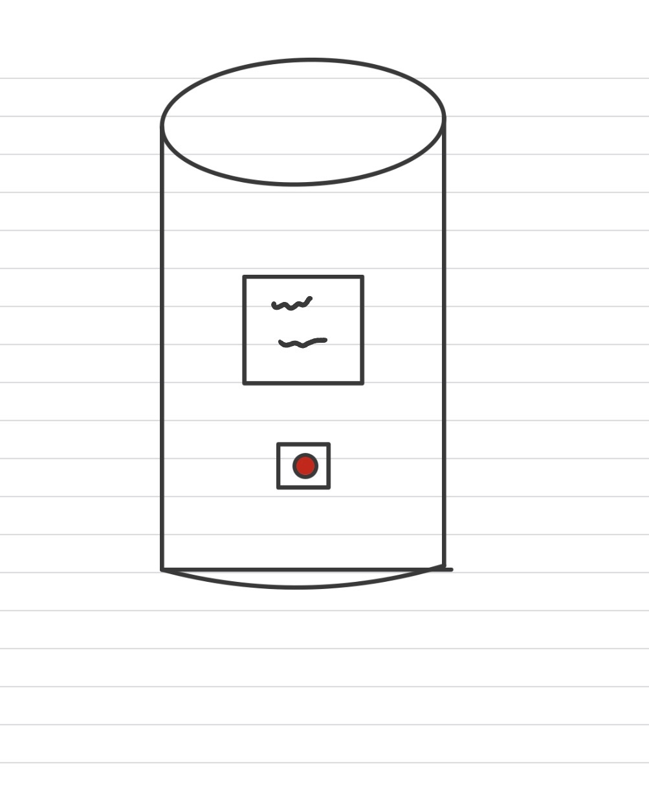
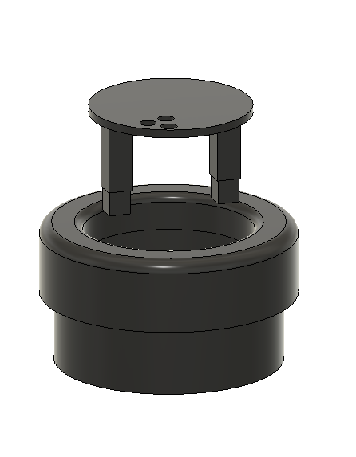
Through this process, I considered how different input mechanisms would affect the overall asthetic aswell as the user experience. While other ideas, such as a fully interactive lid, were explored, they proved very difficult to implement within the given time constraints. As a result, the final design used a circular cutout on the top of the lid to act as the button, providing a more intuitive and "fun" interaction while remaining feasible to build.
This reflects, what I belive to be a more mature design approach, where different interaction methods were explored, evaluated, and adapted based on the user, project goal and practical constraints.